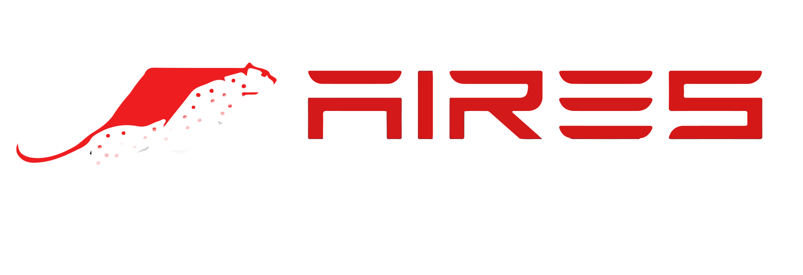
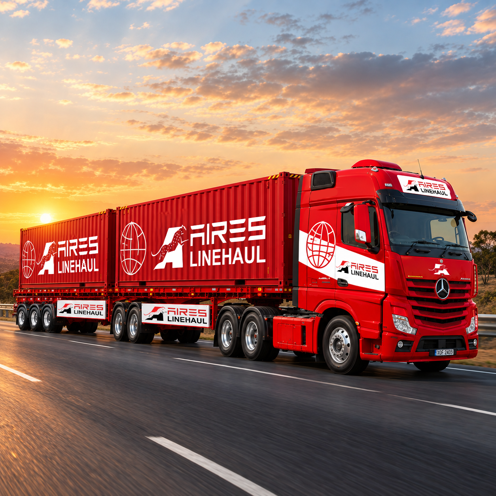

Reliable planning
Movements planned around route, timing, capacity and operational requirements.

Request a QuoteAbout Aires Linehaul
A focused interstate partner for businesses that need dependable capacity, clear communication and practical road transport solutions.
Who we are
Aires Linehaul provides interstate container transport for removal, relocation and logistics businesses across Australia's East Coast.
We understand that freight movement is not simply about getting from one city to another. It is about having the right capacity, dependable departures and responsive operational support when plans change.
Our approach is straightforward: understand the requirement, plan the movement carefully and communicate clearly from origin to destination.

How we operate
Movements planned around route, timing, capacity and operational requirements.
Responsive updates that help customers coordinate their wider operation.
Support for one-off movements, overflow requirements and regular contracted work.
A B2B service designed for removal, relocation and logistics customers.
Connected corridors
Our road network connects key interstate markets and supports direct container movement between established and developing routes.
View Our RoutesTalk to our team
Tell us what you need moved, where it is going and when it needs to arrive.
Contact Aires Linehaul